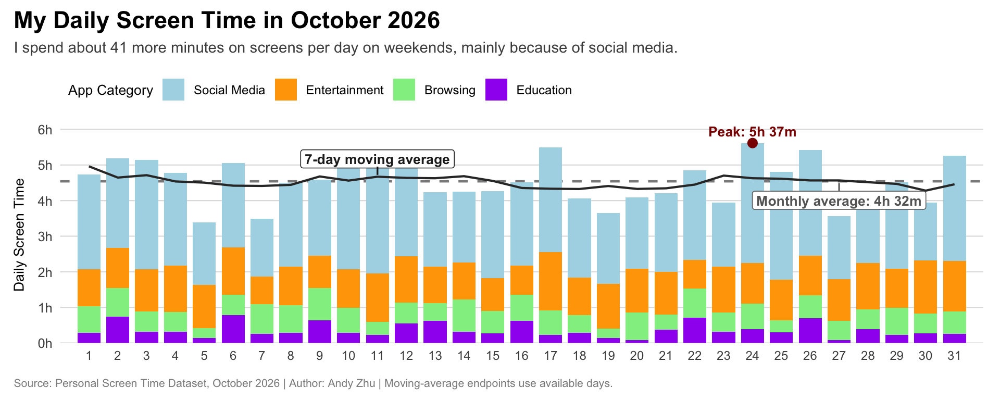
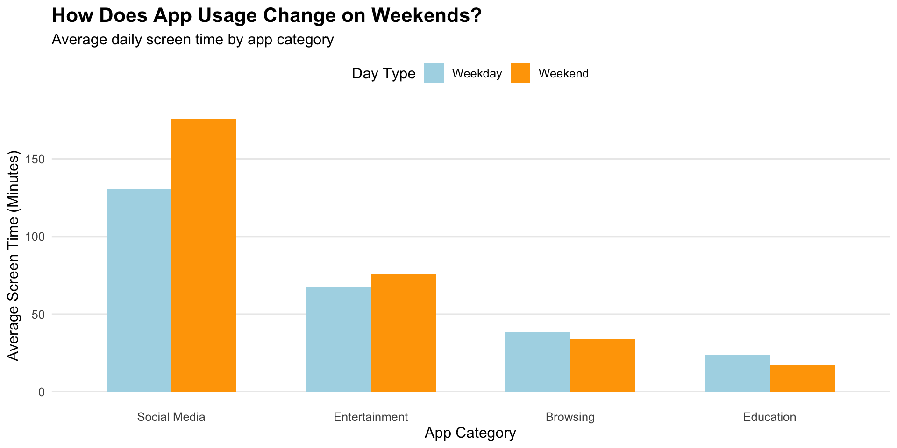

Date DayOfWeek DayType SocialMedia
Min. :2026-10-01 Length:31 Length:31 Min. : 97.0
1st Qu.:2026-10-08 Class :character Class :character 1st Qu.:119.5
Median :2026-10-16 Mode :character Mode :character Median :142.0
Mean :2026-10-16 Mean :143.9
3rd Qu.:2026-10-23 3rd Qu.:168.5
Max. :2026-10-31 Max. :202.0
Entertainment Browsing Education TotalMinutes
Min. :47.00 Min. :16.00 Min. : 5.00 Min. :203.0
1st Qu.:63.00 1st Qu.:32.00 1st Qu.:15.00 1st Qu.:245.5
Median :69.00 Median :38.00 Median :18.00 Median :271.0
Mean :69.45 Mean :37.19 Mean :21.97 Mean :272.5
3rd Qu.:78.00 3rd Qu.:45.00 3rd Qu.:28.00 3rd Qu.:302.5
Max. :98.00 Max. :55.00 Max. :47.00 Max. :337.0
Code
# Check missing valuescolSums(is.na(screen_time))
Date DayOfWeek DayType SocialMedia Entertainment
0 0 0 0 0
Browsing Education TotalMinutes
0 0 0
Code
library(ggplot2)long <-reshape(screen_time, varying =list(c("SocialMedia", "Entertainment", "Browsing", "Education")), v.names ="Minutes", timevar ="Category",times =c("Social Media", "Entertainment", "Browsing", "Education"), idvar ="Date", direction ="long")avg <-aggregate(Minutes ~ DayType + Category, data = long, FUN = mean)avg$DayType <-factor(avg$DayType, levels =c("Weekday", "Weekend"))avg$Category <-factor(avg$Category, levels =c("Social Media", "Entertainment", "Browsing", "Education"))long$Date <-as.Date(long$Date)long$Category <-factor(long$Category, levels =c("Social Media", "Entertainment", "Browsing", "Education"))total_labels <-unique(long[, c("Date", "TotalMinutes", "DayType")])total_labels <- total_labels[order(total_labels$Date), ]monthly_avg <-mean(total_labels$TotalMinutes)n <-nrow(total_labels)total_labels$Trend7 <-sapply(seq_len(n), function(i) { start <-max(1, i -3) end <-min(n, i +3)mean(total_labels$TotalMinutes[start:end])})monthly_avg <-mean(total_labels$TotalMinutes)avg_label <-sprintf("%dh %02dm", floor(monthly_avg /60), round(monthly_avg %%60))peak_day <- total_labels[which.max(total_labels$TotalMinutes), , drop =FALSE]peak_label <-sprintf("Peak: %dh %02dm", peak_day$TotalMinutes %/%60, peak_day$TotalMinutes %%60)weekday_avg <-mean(total_labels$TotalMinutes[ total_labels$DayType =="Weekday" ])weekend_avg <-mean( total_labels$TotalMinutes[ total_labels$DayType =="Weekend" ])weekend_difference <-round(weekend_avg - weekday_avg)ggplot(long, aes(x = Date, y = Minutes, fill = Category)) +geom_hline(yintercept = monthly_avg, color ="#8A8A8A", linetype ="dashed", linewidth =0.8) +geom_col(width =0.8) +geom_line(data = total_labels, aes(x = Date, y = Trend7), inherit.aes =FALSE, color ="#333333", linewidth =0.75) +annotate("label", x =as.Date("2026-10-11"), y = total_labels$Trend7[11] +30, label ="7-day moving average", color ="#222222",fill ="white", fontface ="bold", label.size =0, size =3.5) +annotate("segment", x =as.Date("2026-10-11"), xend =as.Date("2026-10-11"), y = total_labels$Trend7[11] +17, yend = total_labels$Trend7[11] +3,color ="#222222", linewidth =0.6) +annotate("label", x =as.Date("2026-10-27"), y = monthly_avg -32, label =paste0("Monthly average: ", avg_label), color ="#666666",fill ="white", fontface ="bold", label.size =0, size =3.5) +annotate("segment", x =as.Date("2026-10-27"), xend =as.Date("2026-10-27"), y = monthly_avg -17, yend = monthly_avg -3, color ="#777777",linewidth =0.6) +geom_point(data = peak_day, aes(x = Date, y = TotalMinutes), inherit.aes =FALSE, color ="darkred", size =2.8) +geom_text(data = peak_day, aes(x = Date, y = TotalMinutes +20), inherit.aes =FALSE, label = peak_label, color ="darkred", fontface ="bold",size =3.5) +scale_fill_manual(values =c("Social Media"="lightblue", "Entertainment"="orange", "Browsing"="lightgreen", "Education"="purple")) +scale_x_date(limits =as.Date(c("2026-09-30", "2026-11-01")), breaks =seq(as.Date("2026-10-01"), as.Date("2026-10-31"), by ="1 day"),labels =function(x) {as.character(as.integer(format(x, "%d")))},expand =expansion(add =0)) +scale_y_continuous(limits =c(0, 365), breaks =seq(0, 360, 60), labels =function(x) paste0(x /60, "h"), expand =expansion(mult =c(0, 0))) +labs(title ="My Daily Screen Time in October 2026", subtitle =paste0( "I spend about ", weekend_difference," more minutes on screens per day on weekends, ","mainly because of social media."),x =NULL, y ="Daily Screen Time", fill ="App Category",caption =paste("Source: Personal Screen Time Dataset, October 2026", "| Author: Andy Zhu", "| Moving-average endpoints use available days.")) +theme_minimal(base_size =12) +theme(plot.title =element_text(face ="bold", size =17, margin =margin(b =6)),plot.subtitle =element_text(size =11, color ="grey30", margin =margin(b =10)), plot.title.position ="plot",legend.position ="top", legend.justification ="left", legend.title =element_text(size =10), legend.text =element_text(size =9),axis.text.x =element_text(angle =0, hjust =0.5, size =9), axis.title.x =element_blank(),axis.title.y =element_text(size =10, margin =margin(r =8)), panel.grid.major.x =element_blank(), panel.grid.minor =element_blank(),panel.grid.major.y =element_line(color ="grey88", linewidth =0.4),panel.background =element_blank(), plot.background =element_rect(fill ="white", color =NA),plot.caption =element_text(size =8, color ="grey55", hjust =0, margin =margin(t =12)), plot.caption.position ="plot",plot.margin =margin(t =8, r =12, b =8, l =10))

Code
ggplot( avg,aes(x = Category, y = Minutes, fill = DayType)) +geom_col(position ="dodge",width =0.65 ) +scale_fill_manual(values =c("Weekday"="lightblue","Weekend"="orange" ) ) +labs(title ="How Does App Usage Change on Weekends?",subtitle ="Average daily screen time by app category",x ="App Category",y ="Average Screen Time (Minutes)",fill ="Day Type" ) +theme_minimal(base_size =12) +theme(plot.title =element_text(face ="bold",size =16 ),legend.position ="top",panel.grid.major.x =element_blank(),panel.grid.minor =element_blank() )

Source Code
---title: "Personal Visualization Journey"---Milestone 1: Data Exploration### 1. IntroductionThis project explores my screen time habits, including app usage, daily screen time, and different activity categories.### 2. Load the Dataset```{r}screen_time <-read.csv("screentime_Oct.csv")screen_time$Date <-as.Date(screen_time$Date)head(screen_time)```### 3. Explore the Data```{r}# Check the dataset structurestr(screen_time)# Check the dimensionsdim(screen_time)# Summary statisticssummary(screen_time)# Check missing valuescolSums(is.na(screen_time))``````{r, fig.width=12, fig.height=6}#| fig-width: 10#| fig-height: 4library(ggplot2)long <- reshape(screen_time, varying = list(c("SocialMedia", "Entertainment", "Browsing", "Education")), v.names = "Minutes", timevar = "Category", times = c("Social Media", "Entertainment", "Browsing", "Education"), idvar = "Date", direction = "long")avg <- aggregate(Minutes ~ DayType + Category, data = long, FUN = mean)avg$DayType <- factor(avg$DayType, levels = c("Weekday", "Weekend"))avg$Category <- factor(avg$Category, levels = c("Social Media", "Entertainment", "Browsing", "Education"))long$Date <- as.Date(long$Date)long$Category <- factor(long$Category, levels = c("Social Media", "Entertainment", "Browsing", "Education"))total_labels <- unique(long[, c("Date", "TotalMinutes", "DayType")])total_labels <- total_labels[order(total_labels$Date), ]monthly_avg <- mean(total_labels$TotalMinutes)n <- nrow(total_labels)total_labels$Trend7 <- sapply(seq_len(n), function(i) { start <- max(1, i - 3) end <- min(n, i + 3) mean(total_labels$TotalMinutes[start:end])})monthly_avg <- mean(total_labels$TotalMinutes)avg_label <- sprintf("%dh %02dm", floor(monthly_avg / 60), round(monthly_avg %% 60))peak_day <- total_labels[ which.max(total_labels$TotalMinutes), , drop = FALSE]peak_label <- sprintf("Peak: %dh %02dm", peak_day$TotalMinutes %/% 60, peak_day$TotalMinutes %% 60)weekday_avg <- mean(total_labels$TotalMinutes[ total_labels$DayType == "Weekday" ])weekend_avg <- mean( total_labels$TotalMinutes[ total_labels$DayType == "Weekend" ])weekend_difference <- round(weekend_avg - weekday_avg)ggplot(long, aes(x = Date, y = Minutes, fill = Category)) + geom_hline(yintercept = monthly_avg, color = "#8A8A8A", linetype = "dashed", linewidth = 0.8) + geom_col(width = 0.8) + geom_line(data = total_labels, aes(x = Date, y = Trend7), inherit.aes = FALSE, color = "#333333", linewidth = 0.75) + annotate("label", x = as.Date("2026-10-11"), y = total_labels$Trend7[11] + 30, label = "7-day moving average", color = "#222222", fill = "white", fontface = "bold", label.size = 0, size = 3.5) + annotate("segment", x = as.Date("2026-10-11"), xend = as.Date("2026-10-11"), y = total_labels$Trend7[11] + 17, yend = total_labels$Trend7[11] + 3, color = "#222222", linewidth = 0.6) + annotate("label", x = as.Date("2026-10-27"), y = monthly_avg - 32, label = paste0("Monthly average: ", avg_label), color = "#666666", fill = "white", fontface = "bold", label.size = 0, size = 3.5) + annotate("segment", x = as.Date("2026-10-27"), xend = as.Date("2026-10-27"), y = monthly_avg - 17, yend = monthly_avg - 3, color = "#777777", linewidth = 0.6) + geom_point(data = peak_day, aes(x = Date, y = TotalMinutes), inherit.aes = FALSE, color = "darkred", size = 2.8) + geom_text(data = peak_day, aes(x = Date, y = TotalMinutes + 20), inherit.aes = FALSE, label = peak_label, color = "darkred", fontface = "bold", size = 3.5) + scale_fill_manual(values = c("Social Media" = "lightblue", "Entertainment" = "orange", "Browsing" = "lightgreen", "Education" = "purple")) + scale_x_date(limits = as.Date(c("2026-09-30", "2026-11-01")), breaks = seq(as.Date("2026-10-01"), as.Date("2026-10-31"), by = "1 day"), labels = function(x) {as.character(as.integer(format(x, "%d")))}, expand = expansion(add = 0)) + scale_y_continuous(limits = c(0, 365), breaks = seq(0, 360, 60), labels = function(x) paste0(x / 60, "h"), expand = expansion(mult = c(0, 0))) + labs(title = "My Daily Screen Time in October 2026", subtitle = paste0( "I spend about ", weekend_difference, " more minutes on screens per day on weekends, ", "mainly because of social media."), x = NULL, y = "Daily Screen Time", fill = "App Category", caption = paste("Source: Personal Screen Time Dataset, October 2026", "| Author: Andy Zhu", "| Moving-average endpoints use available days.")) + theme_minimal(base_size = 12) + theme(plot.title = element_text(face = "bold", size = 17, margin = margin(b = 6)), plot.subtitle = element_text(size = 11, color = "grey30", margin = margin(b = 10)), plot.title.position = "plot", legend.position = "top", legend.justification = "left", legend.title = element_text(size = 10), legend.text = element_text(size = 9), axis.text.x = element_text(angle = 0, hjust = 0.5, size = 9), axis.title.x = element_blank(), axis.title.y = element_text(size = 10, margin = margin(r = 8)), panel.grid.major.x = element_blank(), panel.grid.minor = element_blank(), panel.grid.major.y = element_line(color = "grey88", linewidth = 0.4), panel.background = element_blank(), plot.background = element_rect(fill = "white", color = NA), plot.caption = element_text(size = 8, color = "grey55", hjust = 0, margin = margin(t = 12)), plot.caption.position = "plot", plot.margin = margin(t = 8, r = 12, b = 8, l = 10))``````{r}#| fig-width: 10#| fig-height: 5ggplot( avg,aes(x = Category, y = Minutes, fill = DayType)) +geom_col(position ="dodge",width =0.65 ) +scale_fill_manual(values =c("Weekday"="lightblue","Weekend"="orange" ) ) +labs(title ="How Does App Usage Change on Weekends?",subtitle ="Average daily screen time by app category",x ="App Category",y ="Average Screen Time (Minutes)",fill ="Day Type" ) +theme_minimal(base_size =12) +theme(plot.title =element_text(face ="bold",size =16 ),legend.position ="top",panel.grid.major.x =element_blank(),panel.grid.minor =element_blank() )``````{r}```